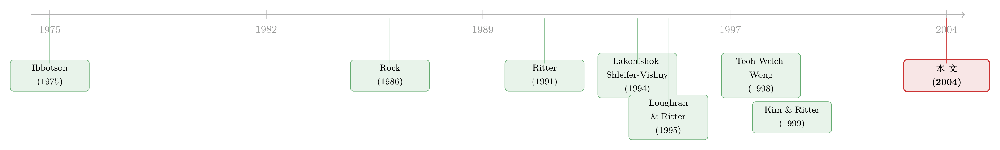

新股到底是「打折」卖，还是「溢价」卖？
本文读的是 Purnanandam & Swaminathan (2004, Review of Financial Studies)：过去几十年里，新股 (IPO) 上市首日平均要涨 10%–15%，学界把它叫做「抑价 (underpricing)」，言下之意是发行方把价卖便宜了。可两位作者把 1980–1997 年 2,288 家 IPO 拿同行业可比公司的价格倍数一量，发现中位数 IPO 在发行价上其实是被「高估」了 14% 到 50%——同一只新股，既可能是「打折」的，又可能是「溢价」的。
1 一个被叫错了名字的现象
先说一个几乎人人都知道的「事实」。
新股上市，首日往往大涨。Logue (1973)、Ibbotson (1975) 早就记录下这件事：发行价 (offer price) 定在 P，第二天市场一开盘，价格「唰」地跳到 P 之上，平均跳 10%–15%。学界给它起了个名字，叫抑价 (underpricing)——意思是，发行方和它的投行把价卖低了，平白把钱「留在了桌子上」。
接着，一个庞大的理论文献就围着这件事转。Rock (1986) 的赢家诅咒、Allen and Faulhaber (1989) 与 Welch (1989) 的信号模型、Benveniste and Spindt (1989) 的信息收集……这些模型尽管机制各异，却几乎都通向同一个结论：平均而言，IPO 在发行价上是被「低估」的。逻辑也很自然——既然首日市场价是「公允价值 (fair value)」的体现，而发行价低于它，那发行价当然就低于公允价值。
读到这里，你大概会点头。但请停一秒，盯住这个推理里最不起眼、却最要命的一个假设：
整套「抑价」叙事，把上市首日的市场价默认当成了公允价值。可如果短期内价格本身就不有效呢？如果首日那个被一群人抢出来的高价，根本就不是「价值」，而只是「情绪」呢？
Purnanandam 和 Swaminathan 这篇文章，干的就是把这块地基掀开看一眼的活儿。
2 把「公允价值」换一把尺子来量
这篇文章的核心动作，说穿了只有一句话：别再拿首日市场价当价值的标尺了，换一把独立的尺子。
这把尺子是什么？是相对估值 (relative valuation)——拿同行业里那些已经上市、且不是 IPO 的可比公司 (peer firm) 的价格倍数，去给这家新股算一个「公允/内在价值 (fair/intrinsic value)」，记作 V。然后把它和发行价 P 一比，得到一个 P/V 比率。
P/V > 1，说明发行价比同行业可比公司贵，新股被高估了；P/V < 1，则是被低估。注意，这里的 V 完全不依赖上市后那个市场价——它只用发行时点已知的会计数据和同行报价算出来。这就绕开了「拿市场价证明市场价」的循环。
那 V 具体怎么算？作者用了三种价格倍数：市销率 (price-to-sales, P/S)、价格对 EBITDA（息税折旧摊销前利润）的倍数 (P/EBITDA)，以及市盈率 (price-to-earnings, P/E)。以 P/S 为例，IPO 自己的发行价倍数是：
$$ \left(\frac{P}{S}\right)_{\text{IPO}} = \frac{\text{Offer price} \times \text{CRSP shares outstanding}}{\text{Prior fiscal year sales}} $$
可比公司的市场价倍数则是：
$$ \left(\frac{P}{S}\right)_{\text{Match}} = \frac{\text{Market price} \times \text{CRSP shares outstanding}}{\text{Prior fiscal year sales}} $$
两者一除，就是这只新股基于销售额的估值比率：
$$ \left(\frac{P}{V}\right)_{\text{Sales}} = \frac{(P/S)_{\text{IPO}}}{(P/S)_{\text{Match}}} $$
P/EBITDA 和 P/E 的 P/V 同理类推。直觉很朴素：如果一家新股的市销率是同行的 1.5 倍，而它们在销售规模、盈利能力上又高度相像，那这 0.5 倍的溢价，多半就是「贵出来」的部分。
真正关键的一步，在于「同行」怎么挑。 一把尺子准不准，全看刻度对不对。作者的做法是：先按 Fama and French (1997) 的 48 个行业分组；在每个行业里，先按过去的销售额 (sales，用作规模的事前代理) 分成三档，再在每个销售档里按 EBITDA 利润率（EBITDA/sales）分成三档——这样每个行业最多得到 9 个「行业×规模×盈利」的小组。每只 IPO 落进对应的小组后，再从组里挑一家销售额最接近的公司做配对。为什么要这么折腾？因为只匹配行业太粗，而匹配一长串会计科目又会让你根本找不到配对公司——9 宫格是「太粗」和「太细」之间的一个平衡。这套思路，和 Bhojraj and Lee (2002) 「谁是我的可比公司 (Who is my peer?)」一脉相承。
3 反转：新股不是被低估，而是被高估
尺子换好，结果来了，而且和半个世纪的直觉拧着来。
P/V 的中位数大约是 1.5，而且 Wilcoxon 秩和检验拒绝「中位数等于 1」的 p 值是 0.0001。更刺眼的是,从 1980 到 1997，每一年的中位 P/V 都显著大于 1，无论你用 P/S、P/EBITDA 还是 P/E。这不是某个泡沫年份的偶然，是十八年如一日的系统性现象。
具体高估多少，取决于你拿什么去匹配：
- 只按行业 + 销售 + EBITDA 利润率匹配，高估约 50%；
- 再加上分析师盈利增长预测 (analyst earnings growth forecast) 作为匹配维度，高估降到约 33%；
- 若只按分析师增长预测匹配（不再管盈利能力），高估收窄到约 14%——但依然显著为正。
这个梯度本身就在讲故事：一旦你把「乐观的增长预期」也喂进可比公司的筛选，所谓的「溢价」就被吃掉一大半。 换句话说，IPO 投资者很可能把太多注意力放在了光鲜的增长预测上，而对当下的盈利能力关注太少。
这里有个微妙之处值得停一下。按分析师增长匹配，会让你专挑那些同样被高增长预期托起来的可比公司——而这些公司本身可能也是被高估的。拿一个被高估的标的去给另一个被高估的标的定价，自然量不出多少「高估」。所以 14% 这个数字不是说高估变小了，而是说这把尺子被增长预期「污染」了，量不准了。作者对此是清醒的。
4 高估的新股，到底「高」在哪、又「跌」向哪
光说一只新股贵，还不够。作者下一步要回答：这个 P/V 到底有没有信息含量？被它标成「高估」的新股，后来怎么样了？
于是把 IPO 按 P/V 分成三组——低 P/V（被低估）、高 P/V（被高估）、中间组——做组合检验，同时也用横截面回归控制了账面市值比 (book-to-market)、分析师增长预测、应计项目 (accruals) 等变量。结论是一组干净利落的「双向」证据：
首日收益：高估组反而涨得更多。 高 P/V 组的上市首日收益比低 P/V 组高出 5% 到 7%。这一脚正好踩在信息不对称模型的痛处——按 Rock (1986) 那类模型的预测，最被低估的新股才该有最高的首日回报；可现实恰好相反，越「贵」的越涨。
长期收益：高估组系统性地跑输。 用 Fama and French (1993) 三因子模型和买入持有异常收益 (BHAR) 一起量，高 P/V 组的长期风险调整后收益比低 P/V 组低 20% 到 30%。这说明这把估值尺子并非噪声——它确实在事前就分辨出了哪些是「真贵」。这一长期跑输，也和 Ritter (1991)、Loughran and Ritter (1995) 记录的「IPO 长期表现不佳」严丝合缝地接上了。
那高估组和低估组，基本面上到底差在哪？作者的画像很清楚：高估的新股，当下盈利能力更低（销售与 EBITDA 利润率更低），但被赋予的预期增长更高；应计项目更高（按 Teoh, Welch, and Wong (1998)，意味着盈利质量更差）；此外申报日到发行日的回报更高、首日换手率更高、超额配售 (overallotment) 更多。而在公司年龄、内部人持股比例、承销商声誉、账面市值比上，两组并无显著差异。
最后，事后对账。 那些被高增长预期托起来的高 P/V 新股，承诺的高增长没有兑现，而它们的盈利能力还在从上市前的水平继续往下掉。一句话：市场为一个没发生的未来付了钱。这正好呼应 La Porta (1996)「高增长预期的股票未来收益更低」、以及 Lakonishok, Shleifer, and Vishny (1994)「投资者把过去的增长过度外推」的发现。
5 「高估」和「抑价」，其实可以同时成立
讲到这儿，你可能会以为作者要彻底推翻「抑价」这个概念。但这篇文章最克制、也最高明的地方，恰恰在于它没有。
作者点破了一层窗户纸：「抑价」和「高估」之所以看似矛盾，是因为它们锚定的参照系不一样。
- 传统的「抑价」，是相对于上市首日市场价而言的——发行价比首日价低，所以叫抑价；
- 这篇文章的「高估」，是相对于同行可比公司的长期公允价值 V 而言的——发行价比 V 高，所以叫高估。
那有没有可能，投行确实在「抑价」，但它压低的参照物，不是长期公允价值，而是它在当时观察到的需求下、所能要到的那个最高价？完全可能。于是一只新股可以同时是：发行价 < 它本可以要到的最高价（被抑价），但发行价 > 长期公允价值（被高估）。
这就是全文那句点睛之笔：IPO 可以同时既被高估、又被抑价 (IPOs could be both overvalued and underpriced at the same time)。首日大涨，未必是「投行让利」，也可能是「市场一时上头，价格暂时偏离了价值」。
6 文献脉络
把这条线索捋一捋，会看得更清楚这篇文章站在哪。
起点是 Ibbotson (1975) 把首日大涨钉成一个稳健事实，随后 Rock (1986)、Allen and Faulhaber (1989)、Welch (1989) 等用信息不对称把「抑价」理论化——这是「抑价 = 低估」叙事的黄金时代。
第一道裂缝来自长期收益研究：Ritter (1991)、Loughran and Ritter (1995) 发现 IPO 长期跑输大盘，这与「发行价被低估」的图景格格不入——如果上市时是便宜的，为什么后来会跌？与此并行，行为金融这一支——Lakonishok, Shleifer, and Vishny (1994) 的外推假说、La Porta (1996) 的高增长低收益、以及 Teoh, Welch, and Wong (1998) 的 IPO 盈余管理——在为「投资者被乐观预期误导」积累弹药。
估值方法的预演是 Kim and Ritter (1999)，他们用可比交易倍数给 IPO 估值，但关注点是「倍数能不能预测发行价」，而非「估值能不能预测事后收益」。

这篇文章的位置，就是把上面两条线焊在一起：借 Kim and Ritter (1999) 那样的相对估值工具造出一把独立于市场价的尺子，再用它去解释 Ritter (1991) 那条长期跑输之谜，并给行为金融的「过度外推」提供一个干净的 IPO 证据。它第一次在一个大样本横截面上，把事前估值和事后收益直接连了起来。
顺带一提，这条「新股定价里藏着行为偏差」的脉络，后来在本博客评述过的不少文章里继续延展：分析师吹捧如何抬高了新股需求（参见《上市之后，分析师的「彩虹屁」到底值不值钱？》 与《为什么「贵」的承销方式反而赢了？》）；新股定价过程到底有没有效率（参见《新股定价，到底「有没有效率」？》）；以及把「冷热」与发行时机算成一笔账（参见《新股的「冷热」，其实是投行在替你算的一笔账》）。
7 评论与延伸（Q&A + 研究方向）
(a) 几个可能的疑问
Q：「高估」会不会只是因为漏掉了增长这个变量？高增长公司本来就该有更高的倍数啊。
这是最该问的质疑，作者也正面回应了。他们做了稳健性检验：把分析师盈利增长预测也加进匹配维度，高估幅度从 50% 降到 33%，再单独按增长匹配则降到 14%——但任何一种设定下，中位
P/V都仍然显著大于 1。也就是说，即便把增长喂进去，溢价也没消失，只是缩小。而且作者论证：分析师预测本身系统性偏乐观（Michaely and Womack, 1999），拿它匹配会专门挑出同样被高估的可比公司，从而人为压低你能测出的高估。
Q：用市销率 (P/S) 估值不是出了名的不准吗？
对，所以作者同时用了 P/S、P/EBITDA、P/E 三把尺子。Liu, Nissim, and Thomas (2002) 指出 P/S 估值精度最差、P/EBITDA 和 P/E 更好——而数据里 P/S 的
P/V分布偏度也确实最大。但关键是：三种倍数算出的P/V两两之间的 Spearman 相关都在 0.5 以上且显著（P/S 与 P/EBITDA 高达 0.85），结论彼此印证，不是某一把尺子的偏差。
Q：样本是不是只挑了「会跑输」的那批公司？
恰恰相反。筛选条件（要求上市前一年有 Compustat 数据、EBITDA 为正、发行价≥5 美元）剔除了很多小盘 IPO，而小盘股恰恰是长期跑输最严重的。所以作者明说：他们样本里测到的长期跑输，是更大样本的一个下界 (lower bound)。换句话说，真实世界的高估—跑输关系只会更强，不会更弱。
Q：首日「越贵越涨」，会不会只是高估组风险更高、所以要更高回报？
用风险解释不通。被高估的恰恰是盈利能力更弱、应计更高、增长预期更虚的公司——按理性定价它们不该有更高的预期回报，而且长期它们是跑输的。一个资产同时「首日多涨 5%–7%、长期少赚 20%–30%」，更像是首日被情绪推过头、随后慢慢回归，而不是风险补偿。
Q：这是不是说「抑价」这个概念错了？
不是。作者很克制：他们不否认抑价存在，只是指出它锚定的参照物是首日市场价，而非长期公允价值。一只新股可以既被抑价（低于投行能要到的最高价）、又被高估（高于长期公允价值）。两者并不互斥——这才是文章的精髓。
Q：为什么是 EBITDA 利润率，而不是净利润率？
因为 EBITDA 代表经营性现金流，比受非经营项目和会计处理影响的净利润率更稳定；而且很多 IPO 公司 EBITDA 为正但净利润为负，用净利润率会大量损失样本。这是个务实的取舍。
(b) 几个可能的研究问题与提案
1. 把这把尺子搬到公司债一级市场。
【经济故事】股票 IPO 会被「乐观增长」推到高估，那公司债的首次发行 (debut bond issuance) 呢？信用市场里，「高估」对应的是信用利差定得过窄——发行人和承销商是否也在用同行可比券的利差给新债定价，从而在乐观周期里系统性低估违约风险？事后违约/降级，是否能被发行时点的「利差
P/V」预测？ 【可行性】中。需要 TRACE 成交数据、Mergent FISD 发行明细，可比券按行业×评级×久期匹配。识别上可借鉴本文的横截面回归思路，难点在构造可比券的「公允利差」。本博客评述过的《新债上市第一笔成交，凭什么白赚 47 个基点？》正是这个方向的近亲。
2. 外资持有人是不是「高估新股」的边际买家？
【经济故事】本文说投资者被乐观增长预测误导。那哪类投资者最容易上钩？一个自然的猜想是信息劣势更大的群体。外资机构对本地新股的盈利质量、应计操纵更难甄别，是否更倾向于重仓高
P/V的 IPO，并因此在长期跑输上承担了更大份额？ 【可行性】中。需要 13F 或各国持仓披露 + IPO 层面的P/V。识别上可用上市后机构持仓变化与P/V交互。诚实说，把「谁是边际买家」从持仓数据里干净识别出来不容易，但描述性证据是 doable 的。
3. 应计项目是高估的「因」还是「果」？
【经济故事】本文发现高
P/V组应计更高（盈利质量更差）。但这是公司为了发行而主动做高应计（盈余管理，呼应 Teoh-Welch-Wong），还是高增长公司天然应计就高？两种机制对监管含义完全不同。 【可行性】高。Compustat 算应计、用发行时点的酌量性应计 (discretionary accruals) 与P/V做横截面。可借助锁定期到期 (lockup expiration) 等外生时点检验内部人是否「踩着高估卖」。数据现成，识别清晰。
4. 把样本延到互联网泡沫及之后。
【经济故事】本文止于 1997，正是怕 Internet IPO 没有足够事后窗口。可如今 2000 年代、2010 年代的数据齐了。「中位
P/V年年大于 1」这个事实在 1999–2000 的极端泡沫、以及 2010 年后的低利率高估值环境里还成立吗？高估幅度是否随市场情绪 (sentiment) 周期性放大？ 【可行性】高。纯粹是样本扩展 + 复刻方法，数据全部可得。最大价值在于检验这个「跨周期稳健事实」会不会随着发行机制（询价 vs. 直接上市 vs. SPAC）的演变而失效。
8 参考文献
我的判断：这篇文章的贡献不在某个新模型，而在一次干净利落的视角转换——它把「抑价」叙事里那个被默认为真理的「首日市场价 = 公允价值」假设拎出来，换上一把独立的相对估值尺子，于是同一组事实读出了相反的结论。「IPO 既可高估又可抑价」这句话，看似玩文字游戏，实则厘清了两个被长期混淆的参照系，至今仍是理解新股定价的一把钥匙。
对识别，我有两点保留。其一，相对估值的全部说服力都押在「可比公司选得对不对」上；9 宫格匹配已经很用心，但 IPO 公司在生命周期、成长性上与成熟同行终究有系统性差异，残差里可能仍埋着真实的增长溢价——作者用分析师预测做的稳健性检验缓解了这点，却没能根除。其二，长期收益检验对模型设定（三因子 vs. BHAR、控制组怎么选）历来敏感，这也是 IPO 长期表现文献争论了三十年的老问题。
后续我最想看到的，是把这套「事前估值→事后收益」的框架移植到信用市场和不同投资者群体上：如果新债发行也存在系统性的「利差高估」，谁是接盘的边际买家，事后又是谁承担了违约损失？那将把一个股票市场的行为现象，变成一个关于市场结构与投资者异质性的更普遍命题。
- Allen, F., and G. Faulhaber (1989). Signaling by Underpricing in the IPO Market. Journal of Financial Economics 23, 303–323.
- Bhojraj, S., and C. M. C. Lee (2002). Who is My Peer? A Valuation-Based Approach to the Selection of Comparable Firms. Journal of Accounting Research 40, 407–444.
- Fama, E. F., and K. R. French (1993). Common Risk Factors in the Returns on Stocks and Bonds. Journal of Financial Economics 33, 3–56.
- Fama, E. F., and K. R. French (1997). Industry Costs of Equity. Journal of Financial Economics 43, 153–193.
- Ibbotson, R. G. (1975). Price Performance of Common Stock New Issues. Journal of Financial Economics 2, 235–272.
- Kim, M., and J. Ritter (1999). Valuing IPOs. Journal of Financial Economics 53, 409–437.
- Lakonishok, J., A. Shleifer, and R. W. Vishny (1994). Contrarian Investment, Extrapolation, and Risk. Journal of Finance 49, 1541–1578.
- La Porta, R. (1996). Expectations and the Cross-Section of Stock Returns. Journal of Finance 51, 1715–1742.
- Liu, J., D. Nissim, and J. Thomas (2002). Equity Valuation using Multiples. Journal of Accounting Research 40, 135–172.
- Loughran, T., and J. Ritter (1995). The New Issues Puzzle. Journal of Finance 50, 23–51.
- Michaely, R., and K. Womack (1999). Conflict of Interest and the Credibility of Underwriter Analyst Recommendations. Review of Financial Studies 12, 573–608.
- Purnanandam, A. K., and B. Swaminathan (2004). Are IPOs Really Underpriced? Review of Financial Studies 17(3), 811–848.
- Ritter, J. (1991). The Long-Run Performance of Initial Public Offerings. Journal of Finance 46, 3–27.
- Rock, K. (1986). Why New Issues are Undervalued? Journal of Financial Economics 15, 187–212.
- Teoh, S. H., I. Welch, and T. J. Wong (1998). Earnings Management and the Long-Run Market Performance of Initial Public Offerings. Journal of Finance 53, 1935–1974.
- Welch, I. (1989). Seasoned Offerings, Imitation Costs, and the Underpricing of Initial Public Offerings. Journal of Finance 44, 421–449.